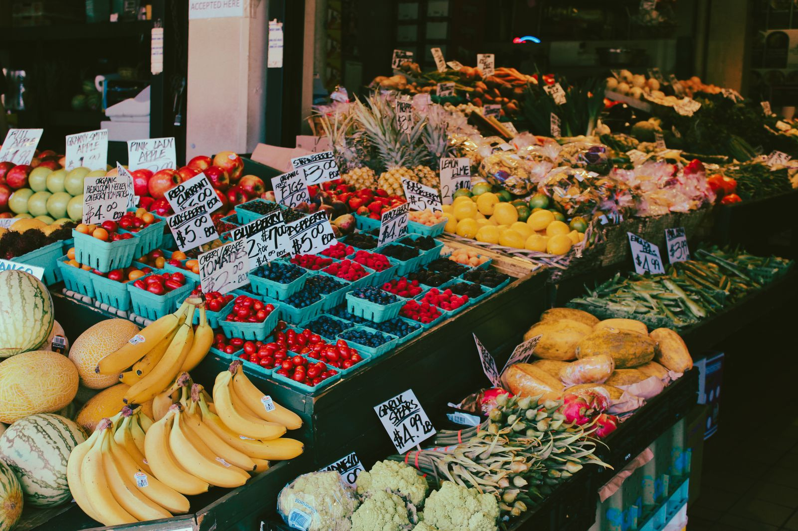

Hexham · Northumberland — Autumn Season 2026
Thirty pitches, three rows, one sloping field.
I'm Marge Fenwick. I host the Market of Seasons on Beaumont Street in Hexham — the harvest market that opens with Harvest Home on the first Saturday of October and closes with the Christmas Night Market in December. Everything I run is on this page: every stall, every fee, every rule. A market you can't read at a glance is a market run on favours, and I don't run those.
People think the corner pitch is the prize. It isn't. Everyone passes a corner twice and buys on neither pass — they're hurrying in, or hurrying home. The money pitch is third from the gate, where people have slowed down and their hands are still empty. — the first thing I tell every new trader, before I take their fee
The stall ledger — who trades where
30 pitches · Row A 8 · Row B 12 · Row C 10
The 2026 autumn season, as pinned on the market office door. If a stall isn't in this ledger, it isn't trading — nobody sells from the car park, nobody pays me in cash on the day.
Row A — The Yard · hardstanding, hot food & drink
8 pitches| Pitch | Stall | What they sell | Trading since |
|---|---|---|---|
| A1 | Brasa & Bean | Wood-fired coffee, churros | 2021 |
| A2 | The Soup Run | Seasonal soups, sourdough by the loaf | 2023 |
| A3 | Hearth & Crust | Flatbreads from a trailer oven | 2019 |
| A4 | Smokehouse Lane | Hot brisket rolls, smoked meats | 2022 |
| A5 | The Cider Press | Hot spiced cider, orchard juice | 2020 |
| A6 | Noodle Bar No. 9 | Hand-pulled noodles, broth pots | 2024 |
| A7 | The Crêpe Cart | Sweet and savoury crêpes | 2023 |
| A8 | Broth & Co.New | Dumplings, bone broths | 2025 |
Row B — The Long Row · produce & pantry
12 pitches| Pitch | Stall | What they sell | Trading since |
|---|---|---|---|
| B1 | Alnwick Greens | Leafy greens, herbs, salad leaves | 2019 |
| B2 | Honeytrap Apiary | Honey, beeswax candles | 2020 |
| B3 | The Cheese Board | Farmhouse cheese, truckles to taste | 2019 |
| B4 | Ellery's Preserves | Jams, chutneys, pickles | 2021 |
| B5 | Orchard Gate | Apples, pears, perry | 2022 |
| B6 | Flour & Fern | Breads, morning buns, rye loaves | 2020 |
| B7 | The Pickle Jar | Kraut, kimchi, ferments | 2023 |
| B8 | Northumbria Meats | Rare-breed pork, sausages | 2019 |
| B9 | The Mushroom Man | Wild and cultivated mushrooms | 2024 |
| B10 | The Spice Shelf | Spices, pulses, grains | 2022 |
| B11 | Dairy of the Dale | Milk, butter, yoghurt | 2021 |
| B12 | Sweetpea Confectionery | Fudge, toffee, brittle | 2023 |
Row C — The Abbey Wall · craft & gifts
10 pitches| Pitch | Stall | What they sell | Trading since |
|---|---|---|---|
| C1 | Woven & Bound | Baskets, woven textiles | 2020 |
| C2 | The Candle Shed | Poured candles, lanterns | 2022 |
| C3 | Ironbark Forge | Hooks, pokers, fire tools | 2019 |
| C4 | Paper Field | Prints, cards, gift wrap | 2023 |
| C5 | The Woolroom | Yarn and knitwear from local fleece | 2021 |
| C6 | Stoneware Studio | Mugs, bowls, jugs | 2022 |
| C7 | The Soap Bench | Cold-process soaps | 2024 |
| C8 | Garland & Wreath | Dried-flower wreaths | 2020 |
| C9 | Second Shelf Books | Secondhand books | 2023 |
| C10 | Toybox TimberNew | Wooden toys | 2025 |

How I run it
A market day, hour by hour
The same shape every Saturday, so traders can plan their stock and their sleep. The two calls that matter — the weather call and the layout — are mine, and I make them early.
| 05:30 | Gates open. I walk the ground with the pitch plan and a torch. If frost has taken the Yard, the grit goes down before any van moves. |
| 06:00 | The weather call. Every trader gets a text either way — trade, trade wrapped, or called off. The call is mine and it is final, so nobody drives forty miles on a guess. |
| 07:00 | Vans in, in pitch order. Row A first: hot food needs the longest set-up, and every power hook-up is checked before the crowds arrive. |
| 08:15 | My walk of the rows. Scales checked, prices up, nothing traded that isn't on the plan. This is also when I hear who's short-staffed and who needs a hand. |
| 09:00 | Open. The first hour belongs to the regulars — baskets, lists, dogs tied to the rail, coffee at A1. |
| 13:00 | The lull. I take tea at Flour & Fern and hear the morning's numbers while they're still honest. |
| 15:30 | Last hot food orders. I note what's left unsold on every stall — it decides next week's layout notes and who's over-ordering. |
| 16:00 | Close. Traders out by 17:30. I walk the ground last, check the standpipes are off, and lock the gates. |
Fees & booking
What a pitch costs — printed, not quoted
These are the 2026 autumn season fees, the same for everyone. Work your own season out with the planner below; it uses exactly these numbers and nothing else.
| Pitch | Size & ground | Per market day |
|---|---|---|
| Standard pitch | 3 m × 3 m, grass or gravel, Rows B & C | £28 |
| Double pitch | 6 m × 3 m, grass or gravel, Rows B & C | £50 |
| Food pitch, Row AFully booked | 3 m × 3 m, hardstanding, power at the pitch | £40 |
| Extra | What it is | Per market day |
|---|---|---|
| Power hook-up | 16A supply from the market cabinets, tested at set-up | £9 |
| Water | Standpipe access at either end of Row B | £4 |
| Table & canopy hire | Two trestles and a market canopy, put up for you | £12 |
- Book 8 or more market days and pitch fees drop by 10%. Extras are charged per day at the printed rate, with no discount.
- The season is 12 market days: eleven Saturdays from 3 October to 12 December 2026, plus the Christmas Night Market on Friday 18 December.
- A pitch is yours when the fee is paid. If I call a day off for weather, that day's fee rolls to the next day or comes back to you — your choice, in writing.
The stallholder planner
Pick a pitch, count your days, add what you need. The planner reads the same table printed above — if the two ever disagree, the table wins and I want to hear about it.
- Standard pitch · 4 days
- £112
- Season discount, 10% off pitch fees (8+ days)
- −£0
- Extras
- £0
- Total for the season
- £112
Every food pitch on the Yard is taken for the whole season, and four traders are on the waitlist ahead of you — I won't take money for a pitch I can't give you. The nearest market day with space is Saturday 5 December: B7 and B9 finish in November, so two standard pitches open for the last two Saturdays. Join the waitlist from the contact page and I'll ring you before I ring anyone else.
The planner gives the season total at the printed fees. Your booking is confirmed only when I've answered you myself — usually within two working days.
Track record
Three seasons, told straight
Every edition gets written up the same way: what was asked, what I did, what came of it. The full accounts are on the Seasons page.
The year the Long Row filled
The market grew from 24 pitches to 30, and every one was taken before the season opened.
The first Night Market
Traders asked for one evening Christmas market. The street had never closed at night before.
The flooded field
Two days before Harvest Home, the ground was under water and the advice was to cancel.
Want a pitch, or just a Saturday out?
Traders: bring something grown or made within forty miles and a willingness to be in the ledger. Visitors: gates open at nine, coffee's at A1.